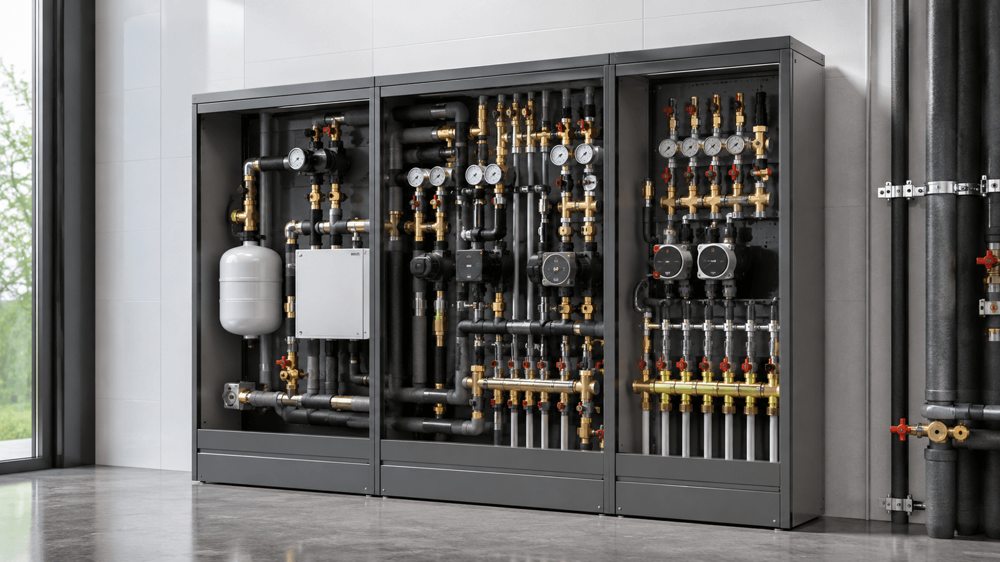

Línea 02 — Hidráulica
Hidráulica de precisión.
Grupos de bombeo, componentes, armarios, boosters y depósitos para instalaciones de climatización de alta eficiencia.
La gama, categoría a categoría.
02 — Hidráulica

Línea 02 — Hidráulica
Grupos de bombeo, componentes, armarios, boosters y depósitos para instalaciones de climatización de alta eficiencia.
02 — Hidráulica